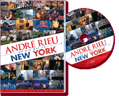

|
André Rieu on his way to New York (2007) - 150 Minutes
|
 |
|
With exciting stories about the real
life that goes on behind the scenes, this DVD gives a
colourful impression of the months of preparation that
are going into the concert in New York. Every aspect is
covered – the travelling, the fun times on the way, but
also the sadness and emotions. What is really involved
in organising a concert like this? What does the
orchestra eat? Where do they stay? What does André do in
the daytime? Do the soloists like going shopping? Or do
they prefer to surf the Internet? There are lots of long
interviews with André himself, about his work, his
private life and his plans for the future. There are
interviews with his son Pierre and with orchestra
players, soloists, the cook, fans etc. etc. This
roadshow was broadcast on Dutch TV in a series of six
programmes, and these have now been put together in the
DVD ‘André Rieu goes to New York’. |
Where to buy?
-
The Warehouse - NONE
-
Mighty Ape - NONE
-
The CD & DVD Store (Marbecks) - $34.99
(No link)
|
|
DVD Tracklist
- Episode 1
- Episode 2
- Episode 3
- Episode 4
- Episode 5
- Episode 6
|
|